(click to enlarge)
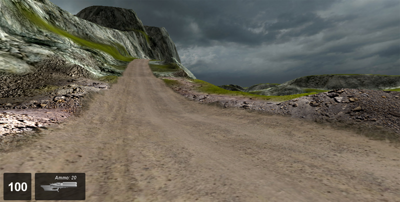
Introduction
The Road and Path Editor is used to create decal-based roads on your terrain. A decal-based road follows every contour of the terrain, unlike a Mesh Road which is a solid 3D object. By using the Road and Path Editor and a few choice materials, you can easily create dirt tracks, trails, paths, and simple roads. To create more complicate roads that rise above the terrain, span hills, or contain bridges use the Mesh Road Editor.
The Road and Path Editor is a built-in WYSIWYG (What-You-See-Is-What-You-Get) editing tool which provides near real-time feedback so that you can see the changes and additions as you make them.
(click to enlarge)
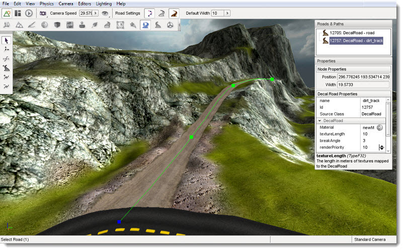
Setup
To use the Path and Road Editor we will need some terrain to place our road upon. From the Toolbox, create a new project using the Full template, and then load the Empty Terrain level.
As illustrated in the images below the decal-based roads that are created by the Road and Path Editor follow the terrain exactly:
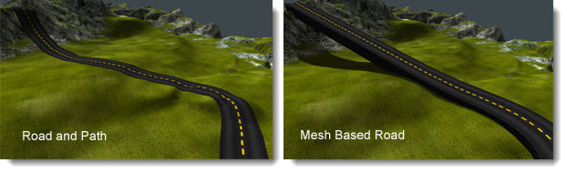
Therefore using the Road and Path Editor to create roads may require you to first flatten the terrain across which your road will run. For more information on how to flatten terrain and make it suitable for a road, see the Terrain Editor article.
For the purpose of this article this is not necessary as the default Full template level has an adequately flat terrain to illustrate the use of this editor.
Interface
To access the Road and Path Editor activate it from the main menu of the World Editor by selecting Editors > Road and Path Editor:
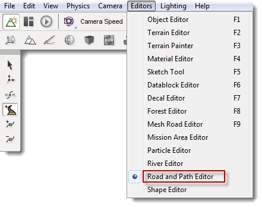
Alternatively, you can click the Road and Path icon from the World Editor Tool Selector Bar.
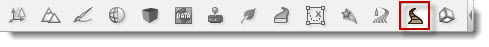
Whenever the Road and Path Editor is active three sections of the screen are updated to contain the editors tools.
On the right side of the screen are the Roads and Paths pane and the Properties pane. At the top is the Roads and Paths pane which contains a list of all the decal-based roads currently in the level, if any are present. At the bottom is the Properties Pane which displays the properties of the currently selected road.
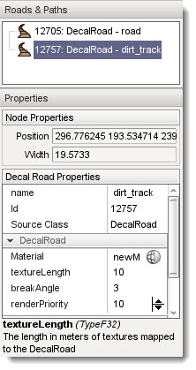
At the left of the screen the Road and Path placement tools will appear which are used to create and modify your roads:
Hint: These toolbars are floating and can be moved to any part of your screen.
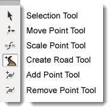
At the top of the screen in the world editor tool bar, a new set of icons will appear after selecting the Road Editor.
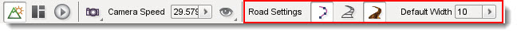
These icons and their associated values will enable you to quickly set up the width of the control points and modify the editor to show and hide some visual aids which can be used to guide your road placement.
Note: There is no depth parameter for decal-roads as there is for Mesh based Roads. As mentioned earlier decal-based roads sit right on the terrain surface and follow the terrain exactly. They do not have their own geometry.
Adding a Decal Road
A decal-based road is created by placing a number of control points across the terrain. Each point can be edited for width at any time. By adjusting these points we have full control over how our road will look.
The default width of control points can be set using the
Default Width property on the Tool Settings Bar at the top of the editor window. Any new roads will be created using these settings until you change their values again.
To create a new road select the Create Road icon 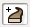 from the tool bar then click on the terrain with the left mouse button where you would like to start your road. Move the mouse away from the clicked location to see the results. Each time you click the terrain you will see three things: (1) a green square which represents the road location that you just placed; (2) a blue square which represents the next location that the road will be if you press mouse button again; (3) the road decals that were just placed.
Note: Depending upon the power of your computer there may be a delay between when you click the terrain and when the decals appear.
Move the mouse to the next point on the terrain that you wish your road to travel to and then click again. Continue moving and clicking until you are finished with the initial placement of your road.
To complete the road placement process press the ESC key. This action will exit the Create Road tool leaving your new road selected and ready for adjustments.
To abort a road creation operation without placing a road at all press the Esc key before selecting a second road point. Once a second road point has been placed the only way to remove the road completely is to delete it, as explained later.
Editing a Decal Road
The Road and Path Editor provides several tools for modifying roads after they have been created. If at any time you make a mistake with any tool, you can press CTRL+Z to undo it.
Note: As with road placement, depending upon the power of your computer there may be a delay between when you perform and editing action and when the change appears in the scene.
Selection Tool
Once you have created your initial road you may need to edit some or all of the control points. This tool will allow you to directly select any created point for further editing. To activate the Selection Tool click its icon on the Tool Selector bar. Note that the Road and Path Editor will automatically select this tool when you have finished creating a new road.
The selection tool allows two types of selection relating to roads:
An entire road can be selected by clicking anywhere on a road other than one of its control points. This type of selection will result in the road being highlighted with a "spline", which is a curved line that runs along the center line of the road, and a series of green squares which represent the roads control points.
The only operations that can be performed on a road as a whole is deleting it. To delete an entire road press the Del key and confirm the operation using the dialog box that will pop up. Unlike a Mesh Road you can not move a decal road as a whole using either the Road and Path Editor or the Object Editor. Selecting a road allows you to see its centerline and it control points for individual selection and manipulation.
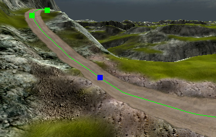
Selecting a control point also causes the Properties pane on the right of the screen to be updated to display the current property values of the control point. The Node Properties section will display the position and width of the selected control point. Values can be directly entered into these fields to modify the point or the Move Point Tool and Scale Point Tool can be used to manipulate the point using the mouse.
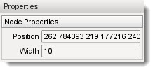
Moving a Road
If at any time you are unhappy with the placement of a selected Road Mesh control point you can use the Move Tool to adjust its position. To activate the Move Tool click its icon 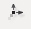 in the Tool Selector bar.
This editor's move mode works a little bit different than the other editors as there is no gizmo over the selected control point when tool is active. To move the selected control point: click the left mouse button on the control point; hold down the button; and drag it to a new position. The road decal will always follow the contour of the terrain.
There may be a small delay as the editor updates the decal road.
Scaling a Road
If you feel that the road is not the correct width, or you just want to make some variations in a dirt track, you can use the Scale Point tool to change the width. This tool works in a similar fashion to the Move Point tool as there is no gizmo over the selected control point when the tool is active. To activate the Scale Point tool click its icon on the Tool Selector.
To change the width of the road: select the control point you would like to scale; click the control point using the left mouse button; hold the button down; and drag the point to the left to reduce the width, or drag it to the right to increase the width.
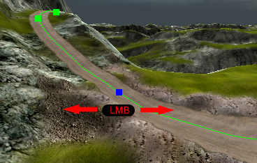
As with the Move tool there may be a small delay as the editor updates the decal road. Release the button to leave the road at that width at any time.
Adding Extra Points
The Insert Point tool can be used to add extra points in a road to create a smoother curve. In order to insert a new point into a road the road must first be selected. See the Selection Tool above for details on how to select a road. To activate the Insert Point tool once a road has been selected click its icon on the Tool Selector bar. To place a new point on the selected road click on the road where you would like the new point to be placed. A new point will be added to the road and will immediately be the currently selected point as indicated by the blue square.
Removing Points
The Remove Point tool can be used to delete a control from a road. In order to remove a new point from a road the road must first be selected. See the Selection Tool above for details on how to select a road. To activate the Remove Point tool click its icon 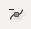 on the Tool Selector bar. To remove a control from the selected road point click on the control point. This will remove only the selected point leaving all the others in place. No adjustments will be performed on the other existing control points.
Properties
The Properties pane on the right side of the screen can be used to configure a decal-based Road:
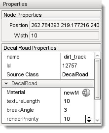
Decal
Road
This section contains properties that control the roads appearance:
Material: The texture assigned to this property will be used as the decal that displays on the terrain to represent the roads surface. Clicking the small round icon to it right will open the Torque 3D Material Selector window:
(click to enlarge)
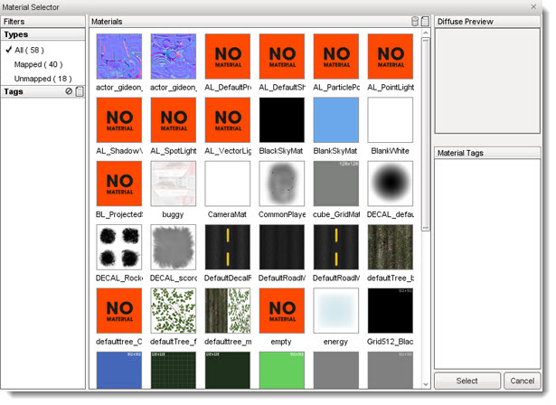
From this window you can select a new material to assign to the Material property. For full details on how to use the Material Selector and how to create new materials see the Material Editor article.
Texture Length: The length the texture will be rendered at in meters, measured along the centerline of the road.
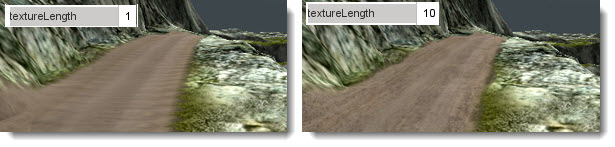
Break Angle: Indicates the angle in degrees that the mesh roads spline will be subdivided into if its curve becomes greater than this threshold.
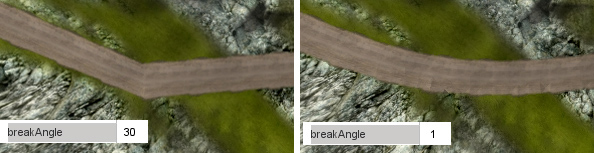
Render Priority: Decal roads are rendered in descending order.
Conclusion
In this article we have explored the decal-based Road and Path system for Torque 3D. You will now be able to expand your projects road construction with dirt trails and small lanes, creating them as you see fit, with full control over their layout.
As with all projects, please remember to save regularly!
|
{kind=link}
{kind=link}
{kind=link}